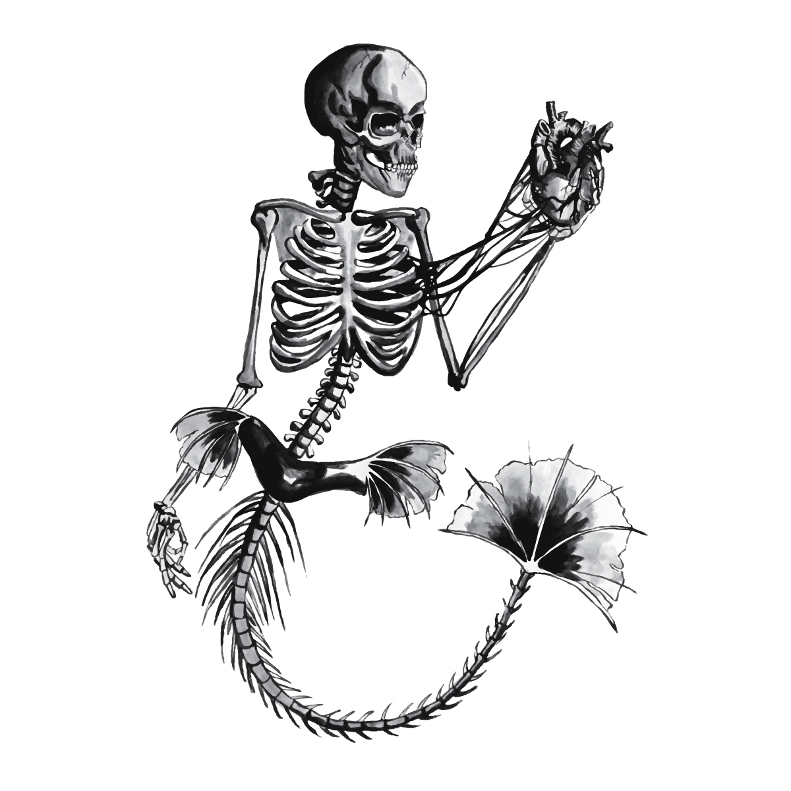
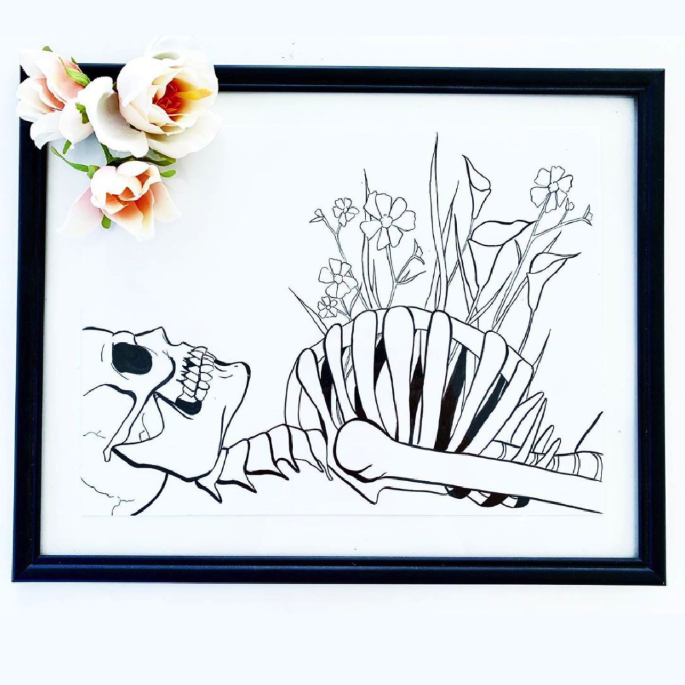
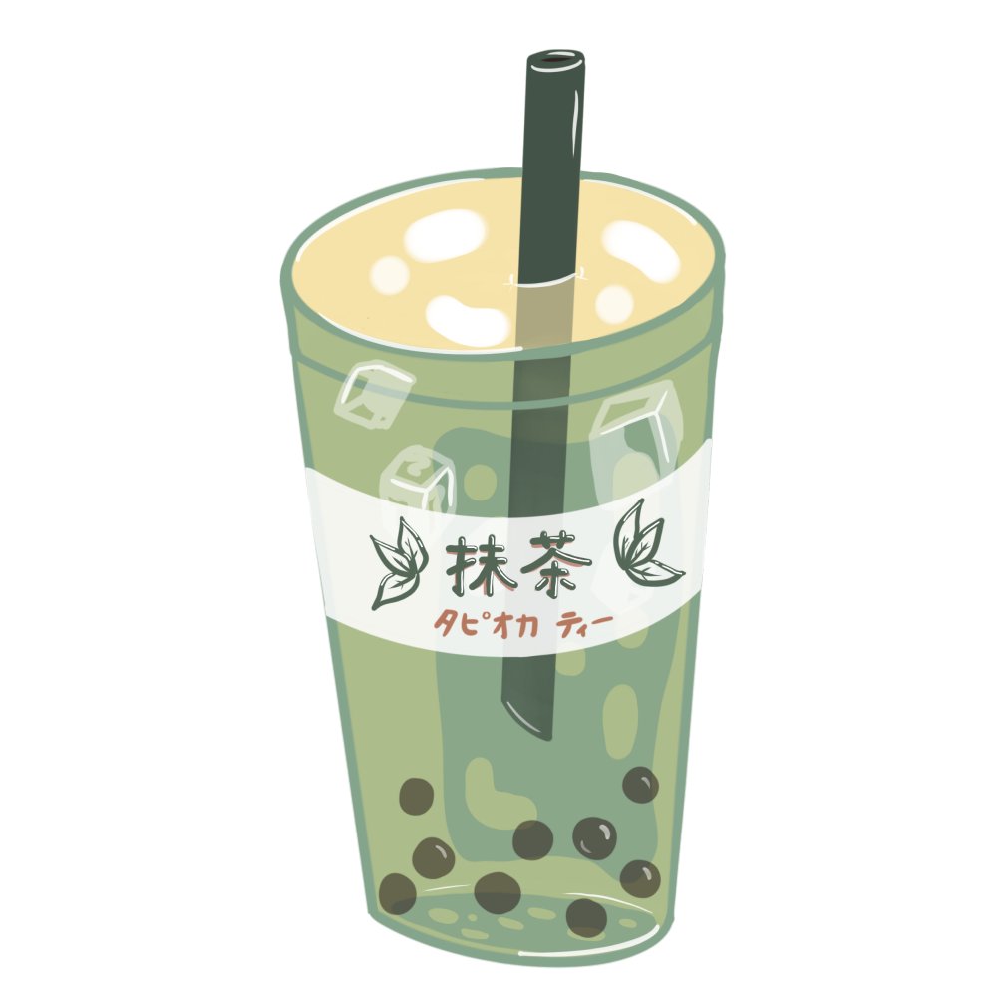
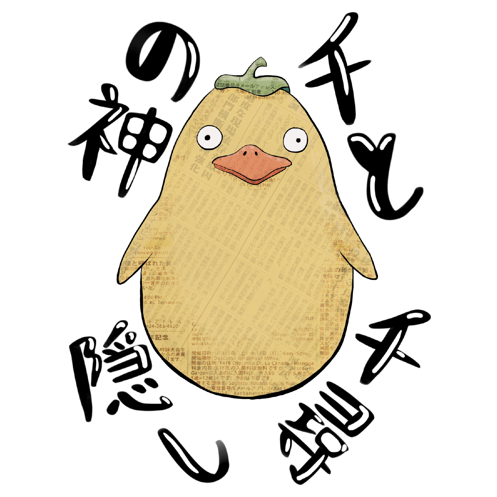
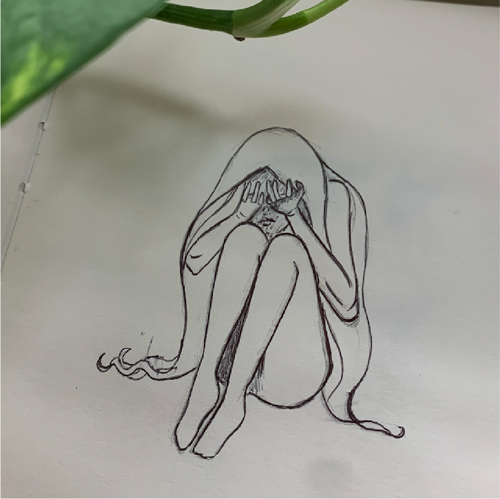

MERMAID COLLECTION
A collection of mermaids. Available as prints and a variety of products.
Skeleton Mermaid ~ Acrylic & water on paper
SKELETON COLLECTION
Skeletons in various stages of life. Available as prints and on a variety of products.
Skeleton in Flowers ~ Ink on paper
TABEMONO COLLECTION
The tabemono collection features popular Japanese desserts and foods in sketch-style drawings. Available as stickers, accessories, and other assorted products.
Matcha Milk Tea ~ Procreate
STUDIO GHIBLI ILLUSTRATIONS
These Studio Ghibli inspired illustrations are created in Procreate with incorporated pieces of newspaper print.
Bathhouse God ~ Procreate
INSIDE MY SKETCHBOOK
A collection of sketches and unfinished pieces.
Sketch of a girl ~ Pen
ILLUSTRATIONS BY CATEGORY
A list of films I've created illustrations for:
- Totoro
- Spirited Away
- Princess Mononoke
STUDIO GHIBLI FILMS
Here's my personal rankings of Studio Ghibli movies from the best to least favorite.
- Spirited Away ~ 千と千尋の神隠し
- Howl's Moving Castle ~ ハウルの動く城
- Kiki's Delivery Service ~ 魔女の宅急便
- Castle in the Sky ~ 天空の城ラピュタ
- Princess Mononoke ~ もののけ姫
- Ponyo ~ 崖の上のポニョ
- Porco Rosso ~ 紅の豚
- The Secret World of Arietty ~ 借りぐらしのアリエッティ
- My Neighbor Totoro ~ となりのトトロ
- Pom Poko ~ 平成狸合戦ぽんぽこ
- Only Yesterday ~ おもひでぽろぽろ
- The Cat Returns ~ 猫の恩返し
- Nausicaä of the Valley of the Wind ~ 風の谷のナウシカ